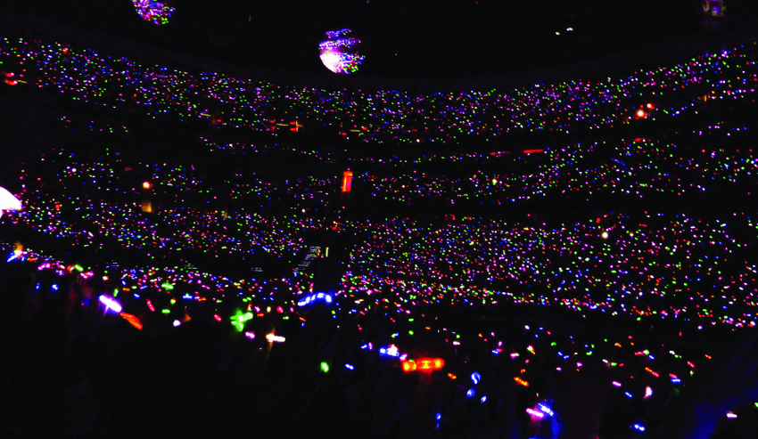
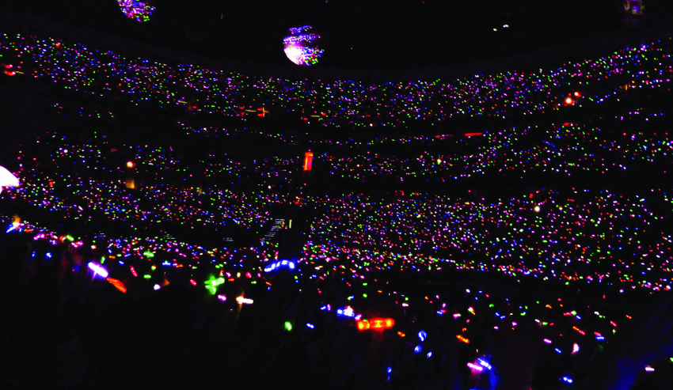

Coldplay Members
.jpg)

Coldplay: A Journey Through Time and Sound
In 2008, Coldplay took a different artistic direction with "Viva la Vida or Death and All His Friends." Experimenting with orchestral and electronic elements, the album showcased the band's willingness to evolve and push creative boundaries. The title track, "Viva la Vida," became a massive hit and won the Grammy Award for Record of the Year. The album's success solidified Coldplay's reputation as innovators in the rock genre. Following "Viva la Vida," Coldplay continued to explore new sonic territories with albums like "Mylo Xyloto" (2011), "Ghost Stories" (2014), and "A Head Full of Dreams" (2015). Each album presented a different facet of Coldplay's artistry, from the atmospheric and intimate mood of "Ghost Stories" to the vibrant and celebratory energy of "A Head Full of Dreams." Notably, the latter album marked a departure from melancholy themes, embracing a more optimistic and pop-oriented sound. Coldplay's impact extends beyond the studio albums; their live performances are legendary. The band's ability to connect with audiences on an emotional level, coupled with visually stunning stage setups, has made their concerts unforgettable experiences. The "A Head Full of Dreams Tour" (2016-2017) became one of the highest-grossing tours of all time, underscoring Coldplay's global appeal. As Coldplay navigates through different musical landscapes and continues to evolve, their history remains a testament to the power of authentic storytelling through music. From the earnestness of "Yellow" to the anthemic optimism of "Adventure of a Lifetime," Coldplay's journey reflects the highs and lows of life, love, and human connection. With each album, they invite listeners to embark on a sonic exploration, creating a timeless legacy that resonates across generations.
Concert Gallery

 
